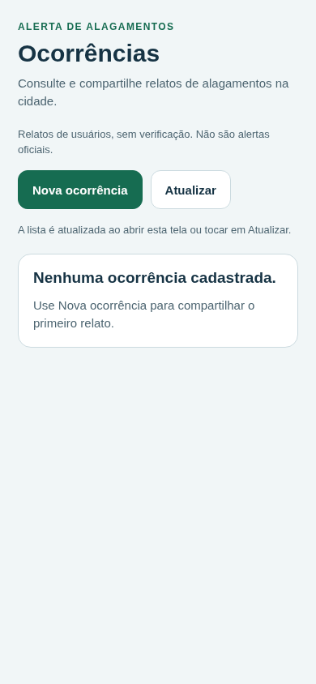
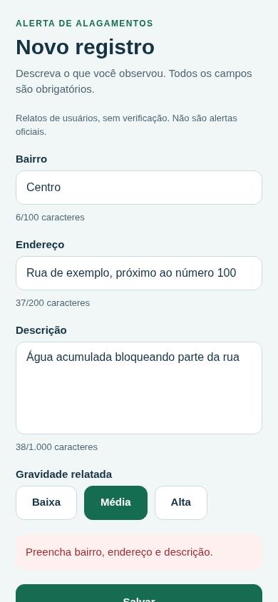
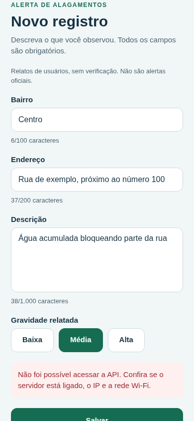
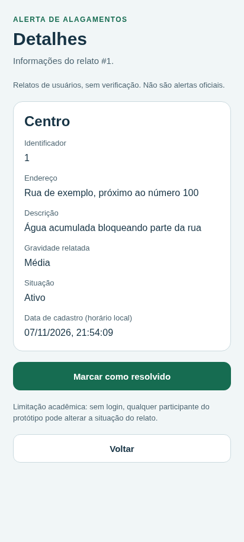
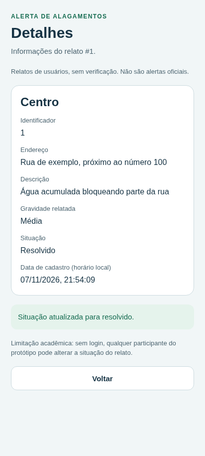
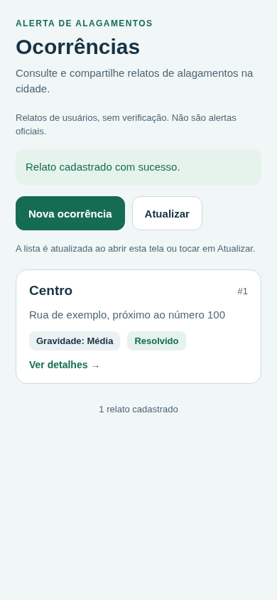
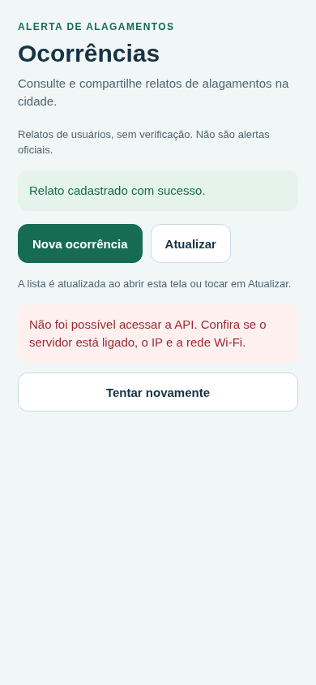

Dois clientes, o mesmo servidor
Cada vídeo corresponde a um cliente isolado do navegador. Use os controles para acompanhar as ações. A reprodução é independente: os vídeos não começam automaticamente e não têm sincronização temporal entre si. Não há narração; as legendas abaixo descrevem o contexto.
Cliente A · cadastro e consultas
Acompanhe o preenchimento do relato fictício e as consultas à API pela interface web.
Abrir vídeo do cliente A (.webm)Cliente B · detalhes e situação
Acompanhe a consulta do mesmo relato por outro cliente e a ação de marcar como resolvido.
Abrir vídeo do cliente B (.webm)O fluxo, etapa por etapa
As imagens ajudam a localizar os estados da interface. Consulte o registro da execução para os resultados das verificações; uma captura isolada não comprova persistência nem comunicação entre dispositivos físicos.


Lista vazia
Estado inicial da consulta, antes do cadastro fictício.


Preenchimento
Dados fictícios preparados para envio à API.


Falha no envio
Mensagem de erro e preservação dos dados digitados.


Detalhes do relato
Informações retornadas pelo servidor ao consultar o identificador.


Situação resolvida
Resposta exibida depois da alteração enviada ao servidor.


Lista atualizada
O outro cliente consulta novamente para obter a situação salva.


API indisponível
A interface permanece aberta e informa a falha de consulta.

Nova tentativa
Consulta repetida após reiniciar a API, mantendo o mesmo banco.
Registro e próximos passos
O arquivo de resultado reúne os dados da execução automatizada que acompanha estas mídias. Confira esse registro e a documentação antes de relatar quais verificações passaram. O ensaio com dois celulares e Expo Go deve receber seu próprio registro, com aparelhos, versões, data e responsáveis.
Mantenha esta página, as imagens, os vídeos e o arquivo de resultado na mesma pasta ao copiar a galeria. Os arquivos são locais; nenhum serviço externo é necessário para visualizar este material.